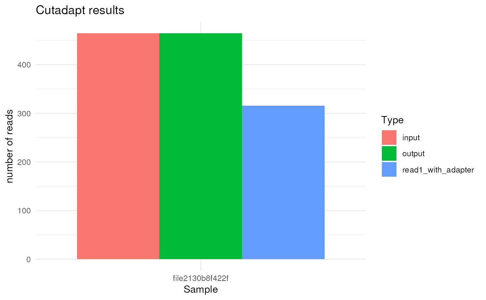
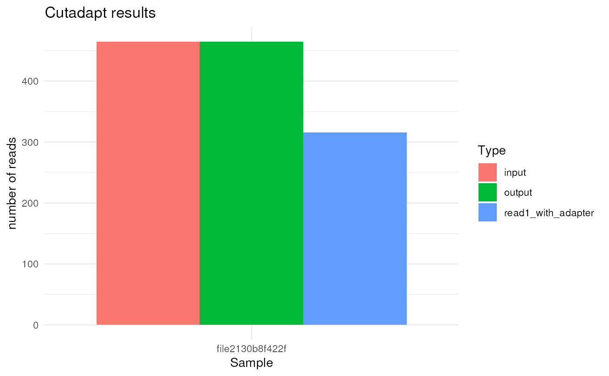

produce a barplot of cell barcode demultiplex statistics
Arguments
- find_barcode_result
output from
find_barcode
Value
a list of ggplot objects:
reads_count_plot: stacked barplot of: demultiplexed reads
knee_plot: knee plot of UMI counts before TSO trimming
flank_editdistance_plot: flanking sequence (adaptor) edit-distance plot
barcode_editdistance_plot: barcode edit-distance plot
cutadapt_plot: if TSO trimming is performed, number of reads kept by cutadapt
Examples
outdir <- tempfile()
dir.create(outdir)
fastq_dir <- tempfile()
dir.create(fastq_dir)
file.copy(system.file("extdata", "fastq", "musc_rps24.fastq.gz", package = "FLAMES"),
file.path(fastq_dir, "musc_rps24.fastq.gz"))
#> [1] TRUE
sampled_lines <- readLines(file.path(fastq_dir, "musc_rps24.fastq.gz"), n = 400)
writeLines(sampled_lines, file.path(fastq_dir, "copy.fastq"))
bc_allow <- file.path(outdir, "bc_allow.tsv")
R.utils::gunzip(
filename = system.file("extdata", "bc_allow.tsv.gz", package = "FLAMES"),
destname = bc_allow, remove = FALSE
)
find_barcode(
fastq = fastq_dir,
stats_out = file.path(outdir, "bc_stat"),
reads_out = file.path(outdir, "demultiplexed.fq"),
barcodes_file = bc_allow, TSO_seq = "CCCATGTACTCTGCGTTGATACCACTGCTT"
) |>
plot_demultiplex()
#> FLEXIPLEX 0.96.2
#> Setting max barcode edit distance to 2
#> Setting max flanking sequence edit distance to 8
#> Setting read IDs to be replaced
#> Setting number of threads to 1
#> Search pattern:
#> primer: CTACACGACGCTCTTCCGATCT
#> BC: NNNNNNNNNNNNNNNN
#> UMI: NNNNNNNNNNNN
#> polyT: TTTTTTTTT
#> Setting known barcodes from /tmp/RtmpbqkQvO/file1e9b1f6fe5b1/bc_allow.tsv
#> Number of known barcodes: 143
#> Processing file: /tmp/RtmpbqkQvO/file1e9b5db4fcc3/copy.fastq
#> Searching for barcodes...
#> Processing file: /tmp/RtmpbqkQvO/file1e9b5db4fcc3/musc_rps24.fastq.gz
#> Searching for barcodes...
#> Number of reads processed: 493
#> Number of reads where at least one barcode was found: 460
#> Number of reads with exactly one barcode match: 455
#> Number of chimera reads: 2
#> All done!
#> $reads_count_plot
#>
#> $knee_plot
#> `geom_smooth()` using formula = 'y ~ x'
#> Warning: span too small. fewer data values than degrees of freedom.
#> Warning: pseudoinverse used at 0.96
#> Warning: neighborhood radius 1.04
#> Warning: reciprocal condition number 0
#> Warning: There are other near singularities as well. 1.0816

#>
#> $flank_editdistance_plot
 #>
#> $barcode_editdistance_plot
#>
#> $cutadapt_plot

#>
#>
#> $barcode_editdistance_plot
#>
#> $cutadapt_plot

#>